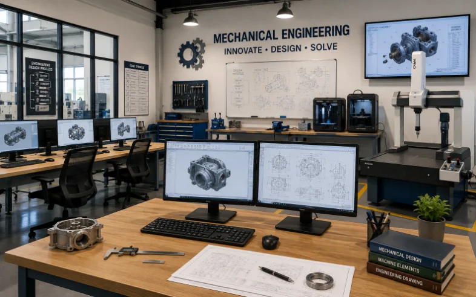
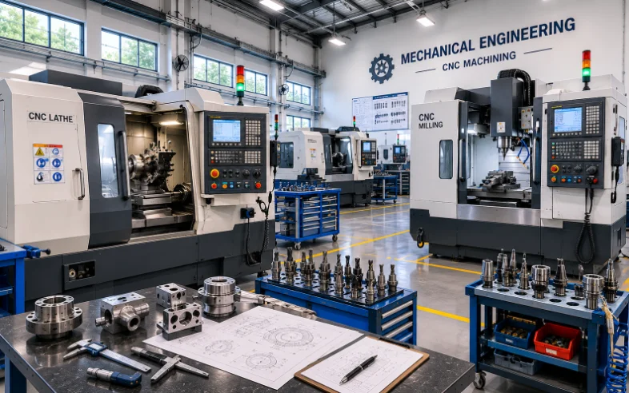
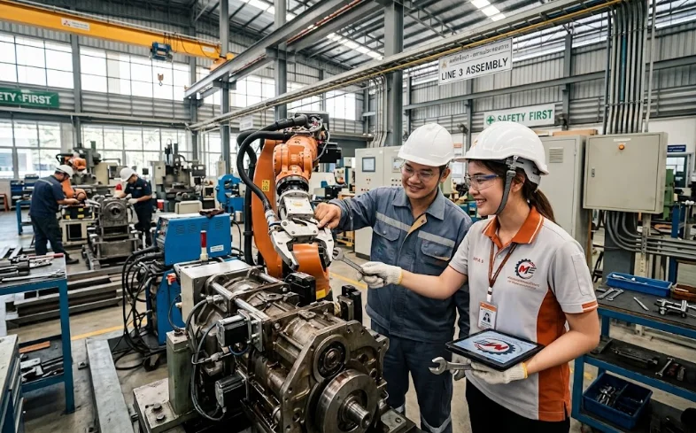
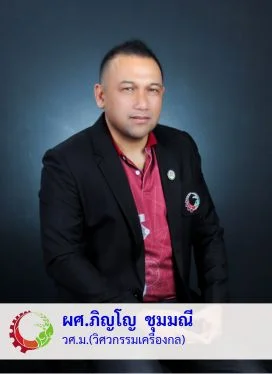

01
ปริญญาที่สภาวิศวกรรับรอง
จบแล้วยื่นขอใบประกอบวิชาชีพวิศวกรรมควบคุม สาขาวิศวกรรมเครื่องกลได้ ซึ่งเป็นเงื่อนไขของงานวิศวกรรมจำนวนมากในภาคอุตสาหกรรม
หลักสูตรวิศวกรรมศาสตรบัณฑิต สาขาวิชาวิศวกรรมเครื่องกล มหาวิทยาลัยราชภัฏนครสวรรค์ — ได้รับการรับรองปริญญาจากสภาวิศวกร เพื่อขอรับใบประกอบวิชาชีพวิศวกรรมควบคุม
ปริญญาวิศวกรรมศาสตรบัณฑิต สาขาวิชาวิศวกรรมเครื่องกล (หลักสูตรปรับปรุง พ.ศ. 2567) ได้รับการรับรองจากสภาวิศวกร เพื่อขอรับใบประกอบวิชาชีพวิศวกรรมควบคุม สาขาวิศวกรรมเครื่องกล
สามอย่างที่สาขาวิศวกรรมเครื่องกลให้ได้จริง ไม่ใช่คำโฆษณา

จบแล้วยื่นขอใบประกอบวิชาชีพวิศวกรรมควบคุม สาขาวิศวกรรมเครื่องกลได้ ซึ่งเป็นเงื่อนไขของงานวิศวกรรมจำนวนมากในภาคอุตสาหกรรม

เรียนภาคปฏิบัติในอาคารปฏิบัติการของสาขา ทั้งงานเครื่องมือกล งานเชื่อม งานทดสอบวัสดุ ระบบของไหลและความร้อน

ออกไปทำงานกับโรงงานและสถานประกอบการก่อนจบ ได้ประสบการณ์จริง เครือข่ายจริง และมักเป็นทางเข้าสู่งานแรก
วิศวกรเครื่องกลทำงานได้กว้างที่สุดสายหนึ่งในงานวิศวกรรม เพราะทุกโรงงาน อาคาร และระบบพลังงาน ต้องมีเครื่องจักรและระบบความร้อน ผู้สำเร็จการศึกษาจึงเข้าทำงานได้ทั้งในภาคอุตสาหกรรมการผลิต งานระบบประกอบอาคาร งานพลังงานและสิ่งแวดล้อม งานซ่อมบำรุงและควบคุมคุณภาพ ไปจนถึงหน่วยงานราชการและรัฐวิสาหกิจ และเมื่อได้รับใบอนุญาตประกอบวิชาชีพวิศวกรรมควบคุมจากสภาวิศวกร ก็สามารถรับรองแบบและควบคุมงานได้ตามกฎหมาย หรือต่อยอดเป็นผู้ประกอบการและศึกษาต่อระดับบัณฑิตศึกษา
อาจารย์ประจำสาขาวิชาวิศวกรรมเครื่องกล พร้อมคุณวุฒิ ความเชี่ยวชาญ และรายวิชาที่รับผิดชอบ — ติดต่อสอบถามเรื่องการเรียนได้โดยตรง

สมัครผ่านระบบรับสมัครของมหาวิทยาลัย — สอบถามรายละเอียดรอบรับสมัคร ค่าเทอม และทุนได้ที่สาขาโดยตรง
ผู้จบ ม.6 หรือ ปวช. สายช่างอุตสาหกรรม (เทียบโอนสำหรับผู้จบ ปวส.)
ดูรอบและกำหนดการจากประกาศรับสมัครของมหาวิทยาลัยในปีการศึกษานั้น
กรอกใบสมัครในระบบรับสมัครกลาง แนบเอกสาร และชำระค่าสมัคร
มาพบอาจารย์สาขา สอบถามได้ทุกเรื่องก่อนตัดสินใจ
* วิศวกรรมเครื่องกลอยู่ในกลุ่มสาขาวิชาที่เป็นความต้องการหลักและจำเป็นต่อการพัฒนาประเทศ (ลักษณะที่ 2)
** เงื่อนไขเป็นไปตามหลักเกณฑ์ที่กองทุนเงินให้กู้ยืมเพื่อการศึกษา (กยศ.) กำหนด การอนุมัติสิทธิ์และวงเงินกู้ยืมขึ้นอยู่กับคุณสมบัติของผู้กู้ และกรอบวงเงินที่ กยศ. จัดสรรในแต่ละปีการศึกษา
ยังไม่แน่ใจว่าเหมาะกับตัวเองไหม? ทักมาถามอาจารย์สาขาได้เลย ตอบทุกคำถามเรื่องการเรียน ค่าใช้จ่าย และการทำงาน
เปิดรับนักศึกษาใหม่ทั้งภาคปกติและเทียบโอน